Approaches to Challenges (Part 1)#
The approaches and solutions for Challenge 1 to Challenge 4 are written and explained in this slide. For Challenge 5, please read part 2.
Challenge 1#
This is the first challenge to get our hands warm for the course. The goal of this challenge is to drive to the red wall as close as we can and stop without colliding into it. For this challenge, we need to run the bot in a simulated world of 1 x 1 as shown in the screenshot below:

In order to solve this challenge, there are two questions that has to be solved.
What is the minimum value of the laser distance sensor (LDS) that we should stop?
How can we set the speed of the bot?
Solution for Challenge 1#
In challenge 1 (as well as other following challenges), I am using tb3.py from Professor Gökçe Aydos as a starting point. In his code, there is a class for Tb3 node, and inside this node there is a publisher and a subscriber. The publisher will publish to the ‘cmd_vel’ topic and the subscriber will get the data from the Laser Scanner. The original code for the class are shown below:
class Tb3(Node):
def __init__(self):
super().__init__('tb3')
self.cmd_vel_pub = self.create_publisher(
Twist, # message type
'cmd_vel', # topic name
1) # history depth
self.scan_sub = self.create_subscription(
LaserScan,
'scan',
self.scan_callback, # function to run upon message arrival
qos_profile_sensor_data) # allows packet loss
self.ang_vel_percent = 0
self.lin_vel_percent = 0
def vel(self, lin_vel_percent, ang_vel_percent=0):
""" publishes linear and angular velocities in percent
"""
# for TB3 Waffle
MAX_LIN_VEL = 0.26 # m/s
MAX_ANG_VEL = 1.82 # rad/s
cmd_vel_msg = Twist()
cmd_vel_msg.linear.x = MAX_LIN_VEL * lin_vel_percent / 100
cmd_vel_msg.angular.z = MAX_ANG_VEL * ang_vel_percent / 100
self.cmd_vel_pub.publish(cmd_vel_msg)
self.ang_vel_percent = ang_vel_percent
self.lin_vel_percent = lin_vel_percent
def scan_callback(self, msg):
""" is run whenever a LaserScan msg is received
"""
print()
print('Distances:')
print('⬆️ :', msg.ranges[0])
print('⬇️ :', msg.ranges[180])
print('⬅️ :', msg.ranges[90])
print('➡️ :', msg.ranges[-90])
As we can see from the code above, the function “scan_callback()” is making use of the subscriber to get the data from the simulated Laser Scanner of the robot. When the Tb3 node is active, the scan_callback() function will be run constantly and the laser data will be collected at the rate of 5 hertz. How do I know that?
While the node is active, we can see all active topics by running the following command in the shell:
ros2 topic list -t
The flag “-t” enables us to see the type of every topic. After running the above command, it returns the following:
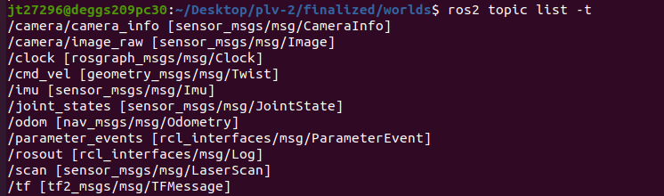
The topic responsible for the laser scan is “/scan”, as you can see from the type written behind in the square bracket. You can check its frequecy by the following command:
ros2 topic hz /scan
And it returns the following:
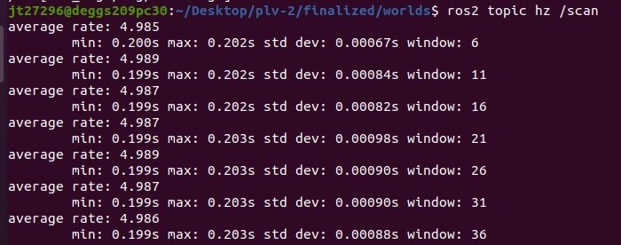
What is the minimum value of the laser distance sensor (LDS) that we should stop?#
Ideally, we should stop very near to the wall without crashing into it. Theoretically speaking, the closer the distance is to 0, the better. But sadly, there are simply too much noises in the Laser Scan (simulated LiDAR) sensor, so we cannot set the distance too close to the wall as well. The sweet spot I found via trial and error is about 0.18.
How can we set the speed of the bot?#
The percentage of angular and linear velocity, defined by “self.ang_vel_percent” and “self.lin_vel_percent” respectively, are set to 0 by default. We can use the setter function “vel()” to change both of the values. The vel() function takes two extra parameters, namely “lin_vel_percent” that is used to change the linear velocity, and “ang_vel_percent” that is used to change the angular velocity of the robot. The angular velocity, however, will be set to 0 by default if the value is not given to the function. Therefore, we can make the robot move forward with for example 15% of its max linear velocity by writing the following code:
self.vel(15)
Combining both concepts, the solution looks as simple as below:
def scan_callback(self, msg):
""" is run whenever a LaserScan msg is received
"""
if msg.ranges[0] > 0.18:
self.vel(15)
else:
self.vel(0)
This function will be executed everytime a LaserScan msg is received, about 5 times per second. The value msg.ranges[0] is the distance between the direct front of the robot to the obstacle (normally walls in our labyrinth). If the distance between them is more than 0.18, the robot will simply move forward with 15% of its maximum linear velocity, otherwise, it will stop completely.
Result:#
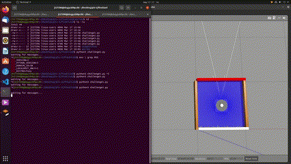
Challenge 2#
For this challenge, we are still working with the same 1 x 1 world as challenge 1. The task is to drive to the red wall and stop at a safe distance. After that, rotate counter clockwise and drive close to the wooden wall and stop. We are allowed to only use laser distance sensor data for this challenge.
Solution for challenge 2#
A simple state machine is implemented. However, the way of how it is implemented is not particularly elegant. I can show you some screenshots as examples for this “quick and dirty” approach.
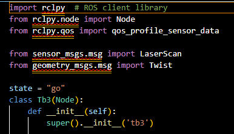
As you can see from the screenshot above, there is one global variable named state with the value assigned to the string ”go”. Its initial value will be overwritten by other functions as shown in the screenshot below:
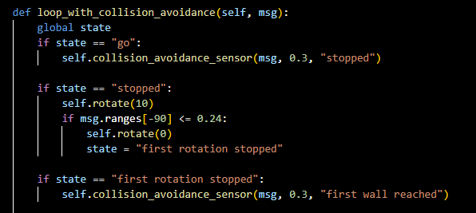
As you can see from the code above, this function will be using the global variable “state”, which is defined as “go” initially. Therefore it will run the function collision_avoidance_sensor() (will be explained later), with ”stopped” as its next state. In other words, it will drive to the red wall and stop at a safe distance and switch to the next state “stopped”.
As the state transitioned to “stopped”, the robot will begin to turn counter-clockwise. Its right side will be the nearest to the red wall when it performs a near 90 degree turn. Therefore, the robot will stop its rotation when the right side is the nearest to the red wall. Via trial and error, I have determined that the value of the minimum distance appears to be 0.24.
The collision_avoidance_sensor() is just to allow the robot to move forward when there is no obstacle in front and stops when it gets too near to them. The code is shown below:
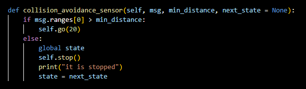
As you have probably already realised, the states that I am using here are not generic. For example, there are states such as “first rotation stopped” and “first wall reached”. The reason for that is, at the point of development, I have no idea that we have to make the code as general as possible so that it can solve different mazes with the same piece of code. So, for challenge 1 to challenge 4, the mazes are solved in such a hard coded way (which means the code would not work anymore if the maze changes). Fortunately, I have generalized the code in challenge 5.
Result:#
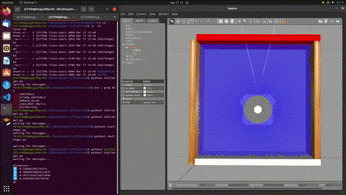
Challenge 3#
This challenge is the exact same as challenge 2, but instead of using laser distance sensor, we are supposed to use the position and orientation published in /odom
Solution for challenge 3#
Just like challenge 2, State Machines are also implemented here. However, it is implemented in a much elegant and cleaner way (although not perfect). Python Enumerations are used instead of using just strings. In this way, all the possible states can be written in just a single class. The enumeration class with the name “State” looks like this:
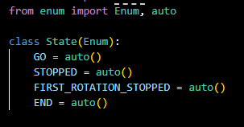
As you can see from the screenshot above, all the states can be seen in just a glance. There are four states here, namely “GO”, “STOPPED”, “FIRST_ROTATION_STOPPED” and “END”. Since their names are pretty self-explanatory, I will not explain them here.
The Tb3 class will now have one extra instance attribute “self.state” with the initial value “State.GO”
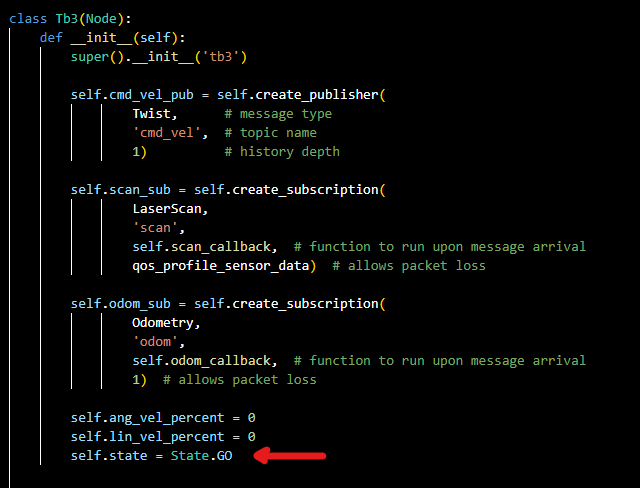
And the states will also be changed at the end of other function calls like this:
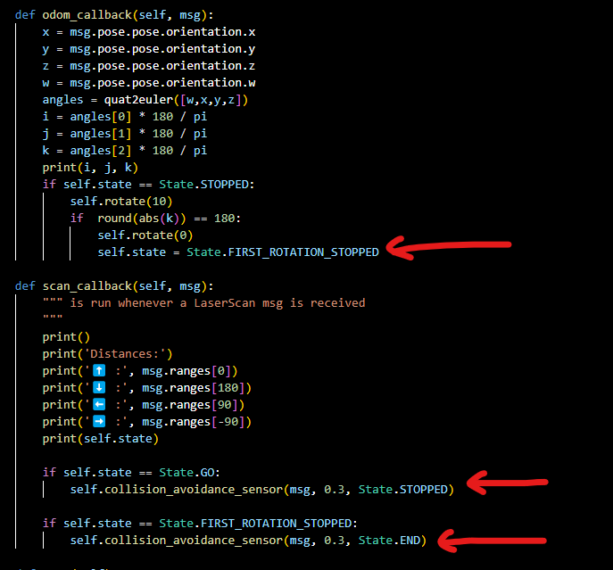
In order to receive data from the /odom topic, I have created a subcription that receives the msg of type Odometry. The code looks very similar to the code for the subscription of the LaserScan:
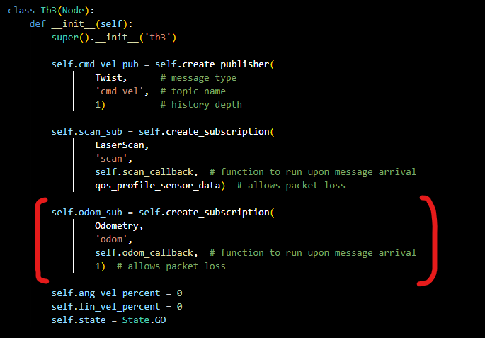
Getting odometry information from this subscription is also very similar to the scan_callback() function for the LaserScan. I have defined the name of the function as odom_callback and it looks like this:
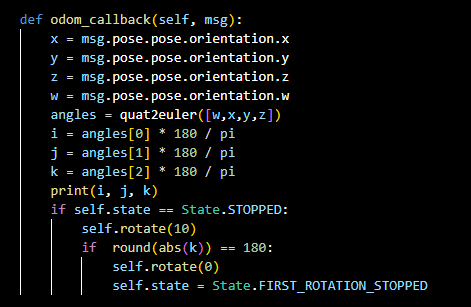
Among all the information returned by this odom_callback() function, the only one that is relevant for us is the orientation in free space represented in quaternion form. We can change them into euler angles in radian and change those angles from radian to degree just by multiplying it with the ratio of (180/pi). You can also use the built in python function math.degrees() to change it to degrees too.
From the quartenion information that is returned by the odom_callback(), we can obtain 3 euler angles in radian after conversion using the quat2euler() function from the transforms3d.euler library. I have named those angles as i, j and k. However, the only angle that will change during the rotation of the robot is k. k will have the value of 90 degrees when it is facing directly to the front, 0 degree when it is facing the right, -90 degrees when facing the back and -180 degrees when facing the left. Those information are summarized in the diagram below:

From the code above, we can see that the bot will stop rotating when the value of “k” is 180 or -180. Which also means that it will stop rotating when it is facing the left side, which is what we want to achieve in this challenge. It is obviously hard coded at this point. Code generalisation will be achieved in challenge 5.
Result:#
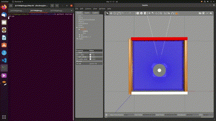
Challenge 4#
Different to other 3 challenges, now we are dealing with a 2 x 2 world instead of 1 x 1. Shown below is the 2 x 2 world that we’re working with:

The task is to drive to the red wall and stop without any collision.
Now we have to find a way to differentiate between red, white and wooden walls. How do we do that?
Approach 1:#
The first thing that came into my mind is to create another subscription to get data from the camera and differentiate them using their RGB values. However, this is not a very reliable approach. If the robot is very far away but facing the red wall, the robot may see half of the white space and half of the red wall. So purely based on RGB values quickly became a complicated approach.
Approach 2:#
After investigating deeper into the output of the /scan topic, I realised that there is an intensities metadata. And even better, the intensity for different walls are unique. For example, red wall has the intensity of “2.0”, white wall has the intensity of “3.0”, and wooden wall has the value of “1.0”. This approach is used in the end to determine the type/ colour of the wall.
The screenshot below shows the intensities metadata for red walls:
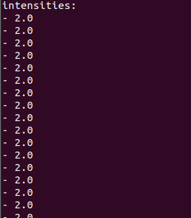
And again, for this challenge, there are more states as shown in the screenshot below, and yes, they are still hard coded in some way (Do this when it reaches the first cell, rotate, do that when the first rotation is stopped and so on until it reaches its end goal)
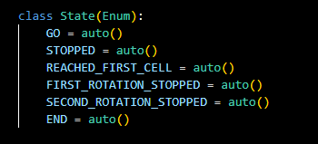
Surprisingly enough, because the solution is so hard coded, I can solve this maze without implementing a way to identify the red wall. I just make it stop after it has went through all the pre-defined states. It is, however, implemented in challenge 5 in order to make the code generalization possible.
Result:#
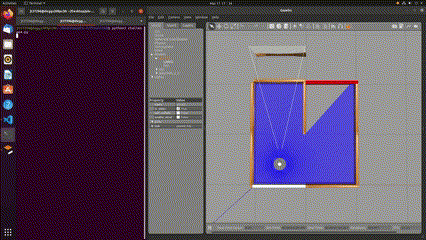